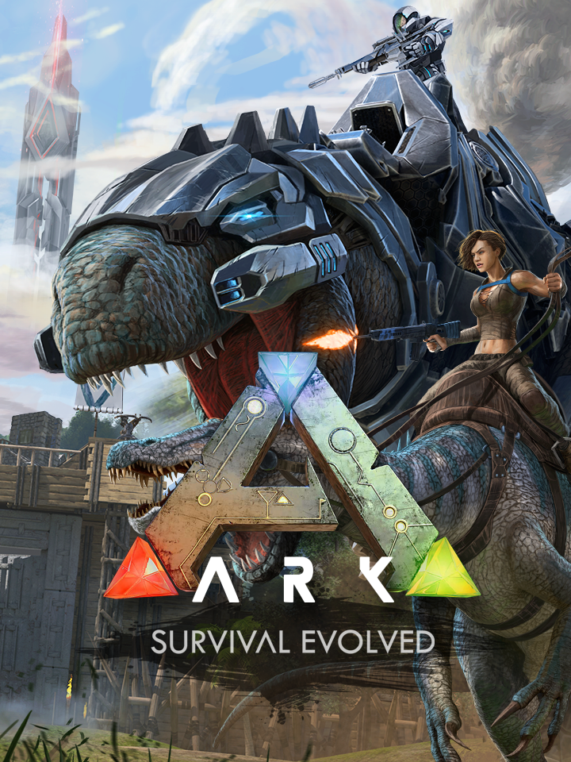

ARK: Survival Evolved
ARK: Survival Evolved
Detalhes
 |
|
| Tempo de jogo | Não Jogado |
| Última Atividade | Nunca |
| Adicionado | 07/06/2026 0:35:51 |
| Modificado | 07/06/2026 0:47:41 |
| Status de Conclusão | Not Played |
| Biblioteca | Steam |
| Fonte | Steam |
| Plataforma | PC (Windows) |
| Data de Lançamento | 27/08/2017 |
| Pontuação da Comunidade | 68 |
| Avaliação da crítica | 69 |
| Pontuação do Usuário | |
| Gênero | Adventure Indie Role-playing (RPG) Shooter Simulator |
| Desenvolvedor | Studio Wildcard |
| Editor | Snail Games Snail Games USA Studio Wildcard |
| Funções | Battle Royale Co-Operative Massively Multiplayer Online (MMO) Multiplayer Single Player Split Screen |
| Links | Facebook Steam Wikipedia Official Website App Store (iPhone) Google Play Epic YouTube Discord Subreddit App Store (iPad) Twitch Community Wiki Xbox Playstation Nintendo |
| Tag | |
Descrição
Como um homem ou uma mulher abandonado nu, congelando e morrendo de fome nas margens de uma misteriosa ilha chamada ARK, você precisa caçar, recolher recursos, construir itens, cultivar, pesquisar tecnologias, e construir abrigos para resistir aos elementos. Use sua astúcia e recursos para matar ou domar & criar os dinossauros leviathans e outras criaturas primitivas andando por aí. Se agrupe ou ataque centenas de outros jogadores para sobreviver, dominar... e escapar!
As seguintes características estão no jogo em seu primeiro dia de Acesso Antecipado. Nós temos muitos outros aspectos e refinamentos planejados para o roteiro de desenvolvimento à longo prazo, e aqui está o que você irá experimentar agora no ARK:
DOME, TREINE, CRIE & MONTE DINOSSAUROS NUM ECOSSISTEMA VIVO
Dinossauros, Criaturas & Reprodução! -- mais de 50 no Acesso Antecipado e mais de 100 planejados para o lançamento final -- podem ser domados usando um desafio de captura-&-afinidade, envolvendo o enfraquecimento de uma feroz criatura para deixá-la inconsciente e então curando-a com a comida adequada. Uma vez domada, você pode emitir comandos para o seu Animal, que pode lhe seguir dependendo de quão bem você o domou e treinou. Animais, que podem continuar a subir de nível e consumir comida, também podem possuir um Inventário e um Equipamento como Armadura, carregar presas de volta para o seu alojamento dependendo de sua força, e animais maiores podem ser montados e controlados diretamente! Voe com um Pterodáctilo sobre as montanhas cobertas de neve, leve aliados por cima das muralhas inimigas, corra através da selva com Aves de Rapina, trompe através de uma base inimiga com um brontossauro gigante, ou persiga presas nas costas de um furioso Tiranossauro Rex! Participe de um ecossistema dinâmico com sua própria hierarquia de predador & presas, onde você é apenas uma criatura no meio de muitas espécies lutando por dominância e sobrevivência. Animais também podem ser unidos com o sexo oposto, para procriar gerações suscetivamente usando um sistema baseado em traços genéticos que serão herdados. Esse processo inclui em ambos os ciclos de vida por incubação em ovos, e gestação mamífera! Ou mais simplesmente, procrie & crie Bebês-Dinossauros!
COMIDA, ÁGUA, TEMPERATURA E CLIMA
Você deve comer e beber para sobreviver, com diferentes tipos de plantas e carne tendo propriedades nutricionais diferentes, incluindo carne humana. Garantir um abastecimento de água fresca para seu repouso e o inventário é uma preocupação premente. Todas as ações físicas têm um custo de comida e água, viagens longas são preocupantes com o perigo de subsistência! Inventário o faz pesar e você se move mais lentamente, e o ciclo dia/noite juntamente com clima de padrões randomizados adicionam outra camada de desafio, alterando a temperatura do ambiente, causando-lhe a fome ou sede mais rapidamente. Uma fogueira ou abrigo e uma grande variedade de vestuário personalizável & armaduras, o ajudam a proteger-se contra perigos locacionais & temperaturas extremas, usando o sistema de cálculo de isolamento interior e exterior dinâmico!
COLHA, CONSTRUA ESTRUTURAS, PINTE INTENS
Por cortar árvores de florestas cheias e minerar metal e outros recursos preciosos, você pode criar as peças para construir estruturas multi-níveis maciças composta de peças complexas de encaixe, incluindo rampas, vigas, pilares, janelas, portas, portões, portões remotos, alçapões, tubulações de água, torneiras, geradores, fios e todos os tipos de dispositivos elétricos e escadas, entre muitos outros tipos. As estruturas têm um sistema de peso para desmoronar-se caso o apoio do suporte seja destruído, assim reforçar seus edifícios é importante. Todas as estruturas e itens podem ser pintados para personalizar a aparência de sua casa, bem como a colocação dinamicamente pintadas por pixel em placas, outdoors textuais e outros objetos decorativos. Abrigos reduzem os extremos do clima e fornecem segurança para si e para os seus! Armas, roupas e equipamento de armadura também podem ser pintados para expressar seu próprio estilo visual.
PLANTAR, CULTIVAR E CRESCER
Pegue sementes de vegetação selvagem a sua volta, plante-as em lotes que você construa, e então molhá-las e nutrí-las com fertilizante (todos fazem cocô depois de consumir calorias, que podem então ser adubados, e uns fertilizantes são melhores do que outros). Tendem a suas colheitas e eles vão crescer para produzir frutos deliciosos e raros, que também podem ser usados para cozinhar uma infinidade de receitas e fazer tônicos úteis! Explore para encontrar a mais rara das sementes de plantas que possui as propriedades mais poderosas! Vegetarianos e veganos podem florescer, e será possível dominar e conquistar o Ark de forma não-violenta!
INVOQUE AS FORMAS DE VIDA DEFINITIVAS
Trazendo suficientes itens raros de sacrifícios para locais especiais de Invocação, você pode ter a atenção de Deuses do Ark iguais as criaturas míticas, quem vai chegar para a batalha. Essas monstruosidades gigantescas fornecem um objetivo final do jogo para os grupos mais experientes dos jogadores e seus exércitos de animais de estimação, e irão ceder itens de progressão extremamente valiosos se forem derrotados.
SISTEMA DE TRIBO
Crie uma tribo e adicione seus amigos, e todos os seus animais de estimação podem ser comandados por quem aliou-se, qualquer um em sua tribo. Sua tribo também será capaz de renascer em qualquer um dos seus pontos de desova das suas casas. Promova os membros da tribo para Admins para reduzir os encargos de gestão. Distribua os pontos-chave e senhas para fornecer acesso a sua aldeia compartilhada!
ESTATÍSTICAS DE RPG
Todos os itens são trabalhados a partir de Desenhos que têm qualidades e estatísticas variáveis e exigem recursos correspondentes. Localidades mais remotas e difíceis do outro lado da ilha tendem a ter mais recursos, incluindo as mais altas montanhas, as mais escuras cavernas e profundezas do oceano! Seu personagem sobe de Nível ganhando experiência através de ações de desempenho, Aumente o Nível de seus animais de estimação e aprenda novos "engramas" para ser capaz de fabricar itens da sua memória sem o uso dos Desenhos, mesmo que você morra! Personalize a aparência física subjacente do seu personagem com cabelo, olho e tons de pele, juntamente com uma matriz de modificadores de proporção do corpo.
MECÂNICA HARDCORE
Tudo o que você criar tem durabilidade e será desgastado por uso prolongado se não reparado, e quando você sair do jogo, seu personagem permanece adormecido persistindo no mundo. Seu inventário existe fisicamente em baús ou em seu personagem no mundo. Tudo pode ser saqueado & roubado, então para guardar em segurança você deve, atualizar suas construções, sua equipe, ou ter animais de estimação para guardar seu estoque. A morte é permanente, e você mesmo pode nocautear, capturar e forçar outros jogadores para usá-los para seus próprios fins, tais como extrair seu sangue para transfusões, colhendo sua matéria fecal para usar como fertilizante ou usá-los como alimento para seus animais de estimação carnívoros!
EXPLORE E DESCUBRA
A misteriosa Ilha é um ambiente formidável e imponente, composto de muitas estruturas naturais e artificiais, acima do solo, debaixo da terra e debaixo de água. Explorando plenamente seus segredos, você encontrará as mais exóticas criaturas processualmente randomizadas e desenhos técnicos raros. Também de ser encontrados são as notas que são atualizadas dinamicamente para o jogo, escritas pelo anteriores habitantes humanos da ilha através dos milênios, criativamente, detalhando criaturas e bastidores do ark e suas criaturas. Desenvolva plenamente o seu no jogo ARK-mapa, através da exploração, gravações personalizadas de pontos turísticos nele, e crie uma bússola ou coordenadas de GPS para ajudar a explorar com outros jogadores, a quem você pode se comunicar via chat de texto e voz de proximidade, ou rádio de longa distância. Construir e desenhar em placas no jogo para outros jogadores para poder ajudá-los ou desviá-los... E claro... como fazer você finalmente, desafiar os criadores e conquistar o ARK? Um final definitivo do jogo é planejado.
MUNDO VASTO PERSISTENTE E META UNIVERSAL
Nos + de 100 servidores, seu personagem, e tudo que você construiu e seus animais de estimação, permanecem no jogo mesmo quando você sair. Você pode transportar até fisicamente seu personagem e itens entre a rede do Ark acessando os obeliscos e enviando (ou baixando) os dados de economia do Steam! Uma galáxia de ARK's, cada um ligeiramente diferente do que o anterior, para deixar sua marca e conquistar, um de cada vez..--Eventos oficiais do ARK serão revelados no mapa do mundo por tempo limitado as vezes em singularidade com eventos temáticos com itens correspondentes com prazo limitado!
GRANDE SUPORTE DE MODIFICAÇÕES DA OFICINA STEAM
Você pode jogar em modo local single-player e trazer o seu personagem e itens entre servidores hospedados não oficiais, e voltar a trazer ao singleplayer do multiplayer. Modifique o jogo, com suporte do Steam Workshop completo e personalizado com o editor Unreal Engine 4. Veja como construímos nosso ARK usando nossos mapas e ative como exemplo. Hospede seu próprio servidor e configure seu ARK precisamente ao seu gosto. Queremos ver o que você pode criar!
VISUAIS DE ÚLTIMA GERAÇÃO E DE ALTA QUALIDADE
As imagens hiper-reais no topo de ARK e suas criaturas ganham vida expressiva usando um motor Unreal Engine 4 altamente personalizado, com iluminação totalmente dinâmica e iluminação global, sistemas meteorológicos (chuva, neblina, neve, etc.) & verdade-à -vida em simulações de nuvem volumétricas, e as mais recentes técnicas avançadas de renderização em DirectX 11 e DirectX 12. Música composta pelo premiado compositor de "Ori and the Blind Forest", Gareth Coker!
As seguintes características estão no jogo em seu primeiro dia de Acesso Antecipado. Nós temos muitos outros aspectos e refinamentos planejados para o roteiro de desenvolvimento à longo prazo, e aqui está o que você irá experimentar agora no ARK:
DOME, TREINE, CRIE & MONTE DINOSSAUROS NUM ECOSSISTEMA VIVO
Dinossauros, Criaturas & Reprodução! -- mais de 50 no Acesso Antecipado e mais de 100 planejados para o lançamento final -- podem ser domados usando um desafio de captura-&-afinidade, envolvendo o enfraquecimento de uma feroz criatura para deixá-la inconsciente e então curando-a com a comida adequada. Uma vez domada, você pode emitir comandos para o seu Animal, que pode lhe seguir dependendo de quão bem você o domou e treinou. Animais, que podem continuar a subir de nível e consumir comida, também podem possuir um Inventário e um Equipamento como Armadura, carregar presas de volta para o seu alojamento dependendo de sua força, e animais maiores podem ser montados e controlados diretamente! Voe com um Pterodáctilo sobre as montanhas cobertas de neve, leve aliados por cima das muralhas inimigas, corra através da selva com Aves de Rapina, trompe através de uma base inimiga com um brontossauro gigante, ou persiga presas nas costas de um furioso Tiranossauro Rex! Participe de um ecossistema dinâmico com sua própria hierarquia de predador & presas, onde você é apenas uma criatura no meio de muitas espécies lutando por dominância e sobrevivência. Animais também podem ser unidos com o sexo oposto, para procriar gerações suscetivamente usando um sistema baseado em traços genéticos que serão herdados. Esse processo inclui em ambos os ciclos de vida por incubação em ovos, e gestação mamífera! Ou mais simplesmente, procrie & crie Bebês-Dinossauros!
COMIDA, ÁGUA, TEMPERATURA E CLIMA
Você deve comer e beber para sobreviver, com diferentes tipos de plantas e carne tendo propriedades nutricionais diferentes, incluindo carne humana. Garantir um abastecimento de água fresca para seu repouso e o inventário é uma preocupação premente. Todas as ações físicas têm um custo de comida e água, viagens longas são preocupantes com o perigo de subsistência! Inventário o faz pesar e você se move mais lentamente, e o ciclo dia/noite juntamente com clima de padrões randomizados adicionam outra camada de desafio, alterando a temperatura do ambiente, causando-lhe a fome ou sede mais rapidamente. Uma fogueira ou abrigo e uma grande variedade de vestuário personalizável & armaduras, o ajudam a proteger-se contra perigos locacionais & temperaturas extremas, usando o sistema de cálculo de isolamento interior e exterior dinâmico!
COLHA, CONSTRUA ESTRUTURAS, PINTE INTENS
Por cortar árvores de florestas cheias e minerar metal e outros recursos preciosos, você pode criar as peças para construir estruturas multi-níveis maciças composta de peças complexas de encaixe, incluindo rampas, vigas, pilares, janelas, portas, portões, portões remotos, alçapões, tubulações de água, torneiras, geradores, fios e todos os tipos de dispositivos elétricos e escadas, entre muitos outros tipos. As estruturas têm um sistema de peso para desmoronar-se caso o apoio do suporte seja destruído, assim reforçar seus edifícios é importante. Todas as estruturas e itens podem ser pintados para personalizar a aparência de sua casa, bem como a colocação dinamicamente pintadas por pixel em placas, outdoors textuais e outros objetos decorativos. Abrigos reduzem os extremos do clima e fornecem segurança para si e para os seus! Armas, roupas e equipamento de armadura também podem ser pintados para expressar seu próprio estilo visual.
PLANTAR, CULTIVAR E CRESCER
Pegue sementes de vegetação selvagem a sua volta, plante-as em lotes que você construa, e então molhá-las e nutrí-las com fertilizante (todos fazem cocô depois de consumir calorias, que podem então ser adubados, e uns fertilizantes são melhores do que outros). Tendem a suas colheitas e eles vão crescer para produzir frutos deliciosos e raros, que também podem ser usados para cozinhar uma infinidade de receitas e fazer tônicos úteis! Explore para encontrar a mais rara das sementes de plantas que possui as propriedades mais poderosas! Vegetarianos e veganos podem florescer, e será possível dominar e conquistar o Ark de forma não-violenta!
INVOQUE AS FORMAS DE VIDA DEFINITIVAS
Trazendo suficientes itens raros de sacrifícios para locais especiais de Invocação, você pode ter a atenção de Deuses do Ark iguais as criaturas míticas, quem vai chegar para a batalha. Essas monstruosidades gigantescas fornecem um objetivo final do jogo para os grupos mais experientes dos jogadores e seus exércitos de animais de estimação, e irão ceder itens de progressão extremamente valiosos se forem derrotados.
SISTEMA DE TRIBO
Crie uma tribo e adicione seus amigos, e todos os seus animais de estimação podem ser comandados por quem aliou-se, qualquer um em sua tribo. Sua tribo também será capaz de renascer em qualquer um dos seus pontos de desova das suas casas. Promova os membros da tribo para Admins para reduzir os encargos de gestão. Distribua os pontos-chave e senhas para fornecer acesso a sua aldeia compartilhada!
ESTATÍSTICAS DE RPG
Todos os itens são trabalhados a partir de Desenhos que têm qualidades e estatísticas variáveis e exigem recursos correspondentes. Localidades mais remotas e difíceis do outro lado da ilha tendem a ter mais recursos, incluindo as mais altas montanhas, as mais escuras cavernas e profundezas do oceano! Seu personagem sobe de Nível ganhando experiência através de ações de desempenho, Aumente o Nível de seus animais de estimação e aprenda novos "engramas" para ser capaz de fabricar itens da sua memória sem o uso dos Desenhos, mesmo que você morra! Personalize a aparência física subjacente do seu personagem com cabelo, olho e tons de pele, juntamente com uma matriz de modificadores de proporção do corpo.
MECÂNICA HARDCORE
Tudo o que você criar tem durabilidade e será desgastado por uso prolongado se não reparado, e quando você sair do jogo, seu personagem permanece adormecido persistindo no mundo. Seu inventário existe fisicamente em baús ou em seu personagem no mundo. Tudo pode ser saqueado & roubado, então para guardar em segurança você deve, atualizar suas construções, sua equipe, ou ter animais de estimação para guardar seu estoque. A morte é permanente, e você mesmo pode nocautear, capturar e forçar outros jogadores para usá-los para seus próprios fins, tais como extrair seu sangue para transfusões, colhendo sua matéria fecal para usar como fertilizante ou usá-los como alimento para seus animais de estimação carnívoros!
EXPLORE E DESCUBRA
A misteriosa Ilha é um ambiente formidável e imponente, composto de muitas estruturas naturais e artificiais, acima do solo, debaixo da terra e debaixo de água. Explorando plenamente seus segredos, você encontrará as mais exóticas criaturas processualmente randomizadas e desenhos técnicos raros. Também de ser encontrados são as notas que são atualizadas dinamicamente para o jogo, escritas pelo anteriores habitantes humanos da ilha através dos milênios, criativamente, detalhando criaturas e bastidores do ark e suas criaturas. Desenvolva plenamente o seu no jogo ARK-mapa, através da exploração, gravações personalizadas de pontos turísticos nele, e crie uma bússola ou coordenadas de GPS para ajudar a explorar com outros jogadores, a quem você pode se comunicar via chat de texto e voz de proximidade, ou rádio de longa distância. Construir e desenhar em placas no jogo para outros jogadores para poder ajudá-los ou desviá-los... E claro... como fazer você finalmente, desafiar os criadores e conquistar o ARK? Um final definitivo do jogo é planejado.
MUNDO VASTO PERSISTENTE E META UNIVERSAL
Nos + de 100 servidores, seu personagem, e tudo que você construiu e seus animais de estimação, permanecem no jogo mesmo quando você sair. Você pode transportar até fisicamente seu personagem e itens entre a rede do Ark acessando os obeliscos e enviando (ou baixando) os dados de economia do Steam! Uma galáxia de ARK's, cada um ligeiramente diferente do que o anterior, para deixar sua marca e conquistar, um de cada vez..--Eventos oficiais do ARK serão revelados no mapa do mundo por tempo limitado as vezes em singularidade com eventos temáticos com itens correspondentes com prazo limitado!
GRANDE SUPORTE DE MODIFICAÇÕES DA OFICINA STEAM
Você pode jogar em modo local single-player e trazer o seu personagem e itens entre servidores hospedados não oficiais, e voltar a trazer ao singleplayer do multiplayer. Modifique o jogo, com suporte do Steam Workshop completo e personalizado com o editor Unreal Engine 4. Veja como construímos nosso ARK usando nossos mapas e ative como exemplo. Hospede seu próprio servidor e configure seu ARK precisamente ao seu gosto. Queremos ver o que você pode criar!
VISUAIS DE ÚLTIMA GERAÇÃO E DE ALTA QUALIDADE
As imagens hiper-reais no topo de ARK e suas criaturas ganham vida expressiva usando um motor Unreal Engine 4 altamente personalizado, com iluminação totalmente dinâmica e iluminação global, sistemas meteorológicos (chuva, neblina, neve, etc.) & verdade-à -vida em simulações de nuvem volumétricas, e as mais recentes técnicas avançadas de renderização em DirectX 11 e DirectX 12. Música composta pelo premiado compositor de "Ori and the Blind Forest", Gareth Coker!